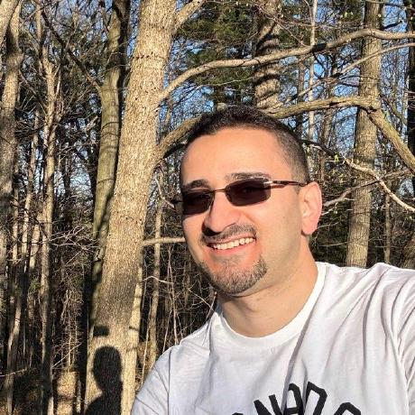

About
I am a third-year PhD candidate in Computer Science at the University of Waterloo, where I work in the Network Research Group under the supervision of Prof. Raouf Boutaba. I received a dual BSc degree in electrical and computer engineering from Isfahan University of Technology, Iran, in 2020 and the MSc degree in electrical engineering from the Sharif University of Technology, Iran, in 2022. I have industry experience in the field of Internet of Things and co-founded a startup in smart home appliances. I have served as a TPC member for IEEE GLOBECOM 2025/26 and ICOMIT 2026.
Research Interests
News
Started serving as technical program committee member for ICOMIT 2026
5Guard published in IEEE TMC
Started serving as technical program committee member for IEEE GLOBECOM 2026